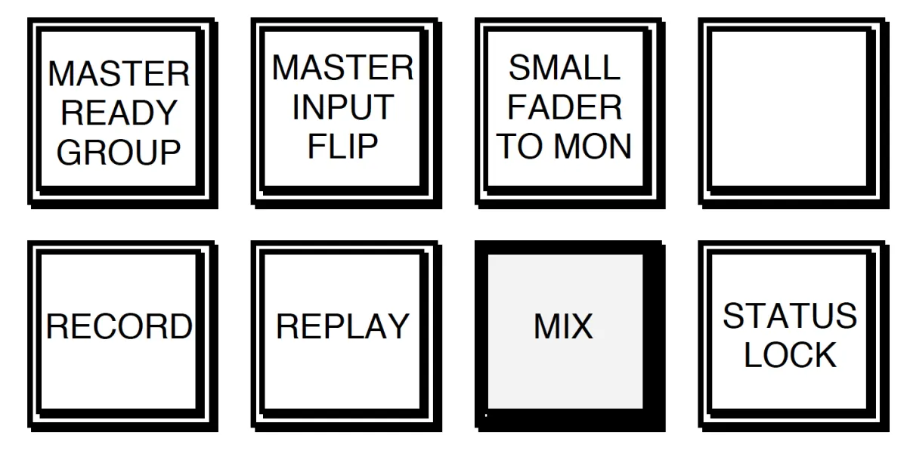
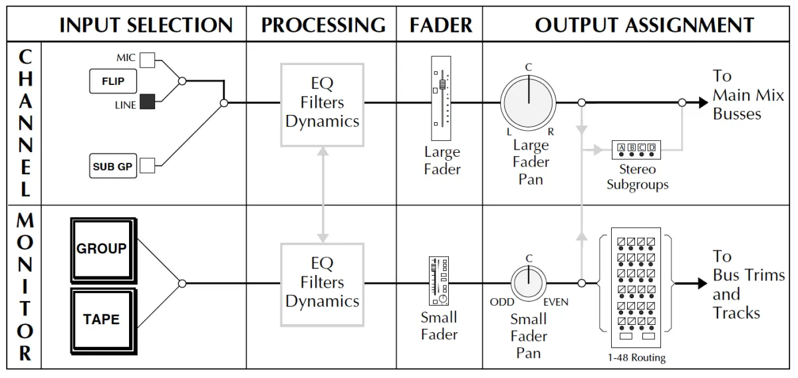

上篇導讀對於SL9000 J錄音工作模式底下的Routing和Signal Flow做了介紹，這週就讓我們來看看它的混音模式和Output Routing吧。現在各式Outboard前級和方便攜帶的錄音器材越來越普及，類比控台最大宗的工作就是拿來混音了，讀書會的大家在這個部分也都特別的投入和認真，除了喜歡類比控台的聲音外，相信大家也是想和老前輩混音師一樣，坐在控台前面，用耳朵直接感受聲音的純粹。
Mix Status


在這個狀態下，預設輸入為Line inputs，經過Large Faders和Large Fader Pans到main Mix bus，再從Master Fader輸出到母帶機。 多軌錄音機通常是直接經由normalized Patch直接內部Return到Line inputs裡面，所以只要按下MIX模式鈕就能馬上進入混音模式。
從上圖可以看出來，在預設的MIX模式底下，監聽路徑的訊號是來自於Tape Monitor並是經由Small Faders和Pan進到多軌路由矩陣(Multitrack Routing Matrix)的。在本文後面會再提到，Mix模式底下的Small Faders也可以拿來做許多不同的用途。
The Small Faders
若想將SL9000發揮到極致，我們必須學會在各種不同的模式下使用Small Fader。

Small Faders as Additional Inputs to the Mix (使用Small Faders做為額外輸入）
在GROUP和TAPE按鈕沒有按下的情況下(預設為Tape輸入)，將訊號連接至patchbay 上的Tape Monitor Input，這個訊號將會流入Small Fader（在第三節會有更詳細介紹）。這時按下SF MIX 按鈕，Small Fader的訊號將會加進Main Mix，這提供了我們兩倍的輸入量。例如一台64軌的控台將可以提供128個輸入源到主輸出。就如圖表上所顯示，這些Small Fader inputs理想的多重外部效果器(FX outboard send & return)輸出到Main Mix 的方法。
Small Faders在SL9000上是有自動化控制的，音量大小和軌道的開關都可以被寫入電腦。需要注意的是，一個軌道只有一組Dynamics和EQ，所以是沒有辦法可以完全地處理到每一軌聲音。但這個方法可以讓較小型的控台應付一些越來越常見的巨型混音工作。
另一個要注意的點是，選擇了SF MIX不會自動切斷Small Fader to Multitrack Routing Matrix的訊號，通常這不會有任何影響，除非在Routing Matrix有不小心將聲音送到不該去的地方。
Small Faders as Additional Auxiliary Sends

雖然SL9000提供了6個mono和1組stereo的 Auxiliary/FX sends，偶而在複雜的混音還是會碰到需要更多不同效果器的時候。SL9000擁有著當時極為創新的auxiliary send reassign system 可以提供最多至56軌多加的Aux send busses。這部分細節在之後會詳細介紹。
此外，曾經使用過SL4000的使用者應該會知道，Small Faders和 Multitrack Routing Matrix也可以用來引導各個軌道的其他effect sends訊號。
經由Small Fader旁的PRE LF 或P(O)ST LF按鈕，可以將channel signal送到Small Fader。在MIX模式的預設情況底下，是由Small Fader送到Routing Matrix。(編按：也就是說MIX模式預設情況底下，按PRE LF或PST LF可以將Channel Signal送到Routing Matrix）
這時只要選擇需要的Multitrack Bus按鈕，就能指定訊號送出的Group Output。最後接上實體導線，把訊號從Group Output跳到的效果器的輸入上就完成了訊號鍵結(Chain)。而送出的訊號大小當然也可以透過電腦自動化控制(Automation)。值得注意的是，PRE LF通常送出的是一個後處理(post-processing)且為Pre-fader的訊號到Small Fader，若有需要，我們可以再由內部訊號的連結來送出前處理(pre-processing)訊號。
在為混音做準備的時候，有一個常見的方法，就是直接把Group Outputs接到各個外部效果器的輸入上（這不包括主要的Reverb與Delay效果，它們通常是直接從aux send送出去），例如我們可以把某些Delay接在Groups 1, 2, 3, 4，其他Reverb接在5, 6, 7等等。
任何通道可以藉由FX Reassign System(後面會詳細介紹)或是選擇 PST LF按鈕+路由矩陣按7，以使用掛在群組7上面的Reverb，並經由可自動化的小Fader所控制(邊按：類似Peo Tools裡面的Send Fader)
Subgrouping

當在處理許多性質相似的軌道時，(例如：和聲)，我們可能會想要一次同時處理它們。若只是想控制音量的話，Large Faders可以subgroup起來由中央的8個Faders控制。但是，如果要一次處理這些音軌的整體訊號，則必須設定一組audio subgroup，藉由路由訊號到一個Stereo Subgroups 並且在Stereo Bus Output 插頭上insert到outboards(在Return Subgroup回到main mix之前)便可以實現此功能。
其他閒置的I/O模組也可以拿來設定Audio Subgroups。使用其他閒置模組，可以不用導線Patch就能輕鬆的建立Mono或Stereo的Audio Subgroups。比如說，我們現在有從Channel 43 – 48 Return的六個和聲軌道，並且Channel 25, 26目前是閒置的。透過按下43-48六個軌道的Large Fader to Multitrack Routing按鈕(LF按鈕，在路由矩陣區的最下面)，Channel Signal可以被指派到路由矩陣，按下路由矩陣的25, 26按鈕把訊號混合送到Group Outputs 25, 26，如果在Channel 25, 26上的SUB GP有被按下(在輸入模組上)，前Group output且後 Bus Trim的訊號會被送去Channel 25, 26的input。將Large Faders的Pan轉到極左極右，各軌道的定位則由Channel 43-48 相對應的Large Pan控制。這時，我們就可以在Channel 25,26 做EQ和Dynamics的整體處理了。
若我們選擇另一個方式，同樣在Channel 25, 26不是按下SUP GP而是GROUP按鈕(小Fader上面)，則是Small Faders會接收混合的和聲訊號(GROUP鈕把Group Output送到Monitor Fader)。這時按下Channel 25, 26的SF MIX就能把經過兩軌Small Fader的訊號送到main Mix裡面。
當我們使用Small Faders控制Audio Subgroup時，Large Faders仍然可以像預設一樣，控制著Channel Path到main Mix的訊號。不過這也有個限制，在上篇(插入標題和連結)的時候曾經提到把Small Faders當作額外的input來使用時，會因為每個軌道的訊號處理器都只有一組，而需要考慮處理器分配的問題。。
事實上，除了以上情況外，設定還可以有很多不同的變化，例如Small Fader to Large Fader 或是 Small Fader to Small Fader Subgroups等等。
順帶一提，雖然我們是在MIX 模式討論這些，但這些原理在各個工作模式下都是一樣的。
我們只能在Routing Matrix上控制前48個Groups，不過任何Channel超過48的都可以利用patchbay串接把訊號匯集在任何的Channel當作Audio Subgroup。
Record + Mix Status (Overdub Mode)
這個模式原本是為了在overdubbing 而設計的，許多工程師在鋪軌道時也都會用這個模式工作。同時按下RECORD和MIX兩個按鈕便可以啟動這個狀態。
這個狀態底下，大部分和MIX是差不多的，不過軌道可以單獨設定成RECORD狀態，選擇TAPE或GROUP，來錄製到該軌道上。
這個模式的優勢在於，大部分的I/O模組都是在MIX狀態，你可以經由大Fader直接做混音。從另一個角度說，除了正在錄音的軌道，模組沒有分source signal path或monitor path，你可以在接近Tracking的狀況下完成混音，並且在接近最終混音的情況下來搭錄需要的軌道。
有一個滿常見的工作型態，前24或48個模組預留給Multitrack，25或49之後當作Source Channels，但這不是一定要這麼做的。
舉一個例子，假設你現在要做Vocal的Overdubbing。目前有4個閒置的軌道，35-38，選擇RECORD + MIX 模式，把其他軌道像平常以樣混音。把Vocal麥克風插入Channel 49，FLIP成Mic input，選擇LF到Routing Matrix並取消選擇在Channel 49的LF MIX，避免麥克風訊號直接進到Mix Bus。這時，只要選擇Routing Matrix的第35按鈕，訊號就會經過Channel 49的Large Fader走到Track 35。
這時，選擇模組35的GROUP (和/或)TAPE 來監聽Multitrack訊號。這會把模組35切換成RECORD模式，並且使用Large Fader控制進入Mix bus的監聽訊號（如果選擇SMALL FADER TO MON就是Small Fader控制監聽）繼續執行overdubbing，結束overdub的時候，把在模組35上面的GROUP (和/或)TAPE取消掉，如果想要錄在其他軌道也是一樣的方法。舉例錄音在36軌，則必須把Channel 49上Routing Matrix的36按下去，除非所有overdub軌道都是事前鋪好了。
你可以用一樣的錄音過程，但是不同的錄音方法，直接把麥克風插入Channel 35並按下GROUP (和/或)TAPE 來把35切換成RECORD模式。Small fader將會控制到Routing Matrix的麥克風訊號，同樣的，按下35和GROUP (和/或)TAPE，並使用Large Fader來監聽。
The Fader Button
讓我們輕鬆的運用FADER按鈕。在前一個例子中，我們提到了只要按下FADER按鈕就可以bypass Routing Matrix。這會把Channel 35的訊號來源：Source Mic 以及post-small fader，直接送到Group35 ，並沒有通過Routing Matrix。這樣的好處是，訊號經過的迴路較少，缺點是每當想要錄在別的Track時都必須重新接一次線。
值得注意的是，在Channel 48上面的FADER按鈕可以送post channel fader訊號給相同編號的Group Outputs。這些Group Outputs無法使用一般Routing Matrix來操作。這部分在第三節會更詳細介紹。
順帶一提，在MIX模式底下，類比的Multitrack可以被切換到Replay Head（如果線路設定是這樣的話），當RECORD狀態鈕被按下的時候，比如MIX + RECORD， Multitrack就會被切換到Sync Head。
這表示同一個工作可以用很多種方法來完成，對於機器還不熟的朋友可能會覺得有些複雜，這整台控台背後的邏輯就是希望能提供熟悉系統的聲音工程師更多選擇。
如果線路只有固定一套的話當然很容易學會，不過這將會限制聲音工程師的工作，使他們無法發揮設備和演出者的最大價值。
當我們在控台上花費的時間越多，這些不同的方法會越來越清楚，那也讓我們在工作上能更快速，比任何其他系統有著更多的彈性。

FX Reassign System
在SL9000上的一個創新發展是他的FX Send reassign system，簡稱EFX。
EFX提供了延伸的auxiliary send功能，不需使用Small Fader來當作訊號量控制，最多可以送出56軌額外的busses。每個I/O模組上有一組Stereo和六個Mono Aux send， 訊號可以選擇pre/post-Large/Small Fader。在第三節會更詳細介紹。
這個系統允許任兩個mono FX sends或stereo cue send從他們各自的busses中分離，並且作為Multitrack Routing Matrix、Stereo Subgroup 和/或 該Channel的Group Output訊號來源。使用各自的EFX switch按鈕可以把Aux sends指派到EFX系統內。FX 1、3、5可以被指派到 EFX ODD。FX 2、4、6可以被指派到 EFX EVEN。在Stereo Cue 上選擇EFX 會把EFX ODD 送到Stereo Cue L、Stereo Cue R 到EFX EVEN。
這邊特別說明一下，同時只能分配一個奇數(ODD)、一個偶數(EVEN)或一組Stereo Cue。編號較低的順位會先於編號高的，Stereo Cue 有最高優先順位。若EFX system 有訊號，則會亮紅燈(EFX ODD)或綠燈(EFX EVEN)。Multitrack Routing和Stereo Subgroup buss可以接受自Large, Small Fader(過pan之後)的訊號，或是任一個EFX訊號。如果有EFX被按下，相對應的Routing Output就會接收到mono的訊號。若兩個按鈕都按下去的話，EFX ODD將會被送到左(ODD)邊而EFX EVEN就會被送到右(EVEN)邊。這讓任意兩個Aux send都可以重新routing回到Multitrack或Stereo busses，製作大量獨立的耳機監聽或effect sends mixes。
如果設定從Multitrack Routing出來的話，我們需要將效果器另外接到Group Output上。Stereo Subgroups的話，要將效果器接在Stereo Bus Output上。
Group Output通常是接收Multitrack Bus Mix Amp的訊號，不過透過按下FADER按鈕，可以把訊號來源改成post-fader channel，或EFX ODD、EFX EVEN訊號。值得注意的是，雖然編號大於48的Channel不能收到Multitrack Routing Matrix的訊號，但他們可以透過EFX ODD and EFX EVEN (或使用FADER送post fader訊號)來送到相對應的Channel。

Output Routing – Standard Systems 標準系統
在這個章節，我們目前提到Main Output和Monitor Output時都只是大略的帶過去，現在，我們要來更深入一點的看看這個部分。完整的內容會在第五節時詳細描述，如果控台是有LCR Pan選項的話，Stereo post-Large and Small Fader signals可以自由的指派到Multitrack busses、Stereo Subgroup busses和Main mix busses。不是所有控台都會擁有LCR Mix busses，而Centre bus必須要開啟LCR Pan才能使用。
Stereo Subgroups 次群組
被分配到次群組的訊號，可以直接從Connector panel或patchbay直接接線出來到控台外。通常設定會有multitrack Playback machine normall到這些outputs。
Subgroup訊號也可以被重新分配回來，post insert，直接透過選擇TO L/R, TO CEN(TRE) or TO SUR(ROUND)送到main Mix busses。注意後兩個通道是將L/R訊號sum成mono才送到CEN或SUR，Surround Mix bus是在centre section內部。
使用上述的功能將其中兩個Subgroup busses分配到Centre和Surround mix通道，就算控台沒有LCR Pan選項也能輕鬆地做出LCRS的影片。
Stereo Subgroup bus outputs可以在外部訊源1(External Source Selector 1)監聽，這部分第五節會有更詳細介紹。
Main Outputs 主輸出
在main LCRS busses上的訓號會先經過一個pre-fader insert point，才走到控台的master(4 channel)，自動化VCA和fader。在這個地方可以開啟Centre section的4-channel Compressor (圖中未標示)來處理Main output的訊號。這個Compressor就是SSL經典的Quad compressor，對於有經驗的SL4000使用者來說應該是非常知名的。
空台的Main outputs通常是有normalled到一系列的Distribution jack上面，而Distribution jack再normalled到三個4-track和9個Stereo Machines。
Monitoring 監聽
送到Monitor機構的訊號是來自Main Fader(post-fader)和Compressor。若選擇DESK OUTPUT的話，這訊號也會同時送到main output meters。
經過AFL、PFL和Solo-In-Front訓號之後，Monitor訊號也可以被兩個External Source影響(第五節詳細說明)。MONO鍵把四個Monitor Busses Sum成mono訊號，並送出相同的訊號到LR或Centre output。而Centre訊號受2CH或4CH的選擇影響，若選擇2CH，會把Centre和Surround mute掉。
一個可切換的Monitor Insert Point是為了連接Dolby Surround 編碼/解碼器. 一組主喇叭和兩對MINI(近場)喇叭可以使用中間的旋鈕作為音量控制。兩個「Listen Mic」電路的Inputs會送到MINI 「A」LS output。如果A/PFL TO MINIS有被選擇，則AFL、PFL和Solo-In-Front也會送到MINI 「A」LS。不過這個選擇會把desk output留在Main monitor，而 AFL/PFL 音量控制也無法使用。

Output Routing with LCR Pan Option
LCR Pan選項有被安裝的話， Centre Mix bus可以直接接收來自Channel的訊號(編按：Pan到中間的時候就送到Centre)。選擇2 CH或4 CH可以決定聲音是Pan在LR和「虛擬的」中間，或是LCR三個點。
當選擇了4CH，Panning一樣是定位在odd/left和even/right Multitrack或Stereo Subgroup busses。
以上就是SL 9000J Main Output和 Monitoring 設定的標準系統。
本說明書版權歸Solid State Logic, Oxford, England所有，中文化僅供技術交流與強力錄音室內部使用，禁止用於商業用途。
PDF版：點我下載
上一篇：SSL說明書導讀-Section II: Basic Routing and Signal Flow （上）錄音篇
下一篇：SSL說明書導讀-Section III: The SL911 Input/Output Module （敬請期待）